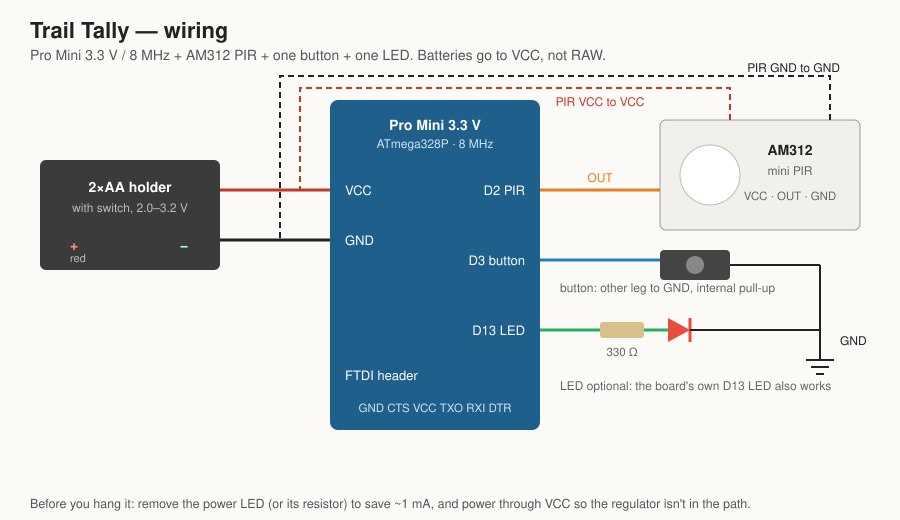
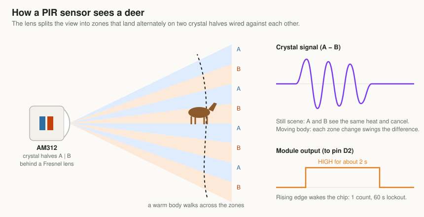
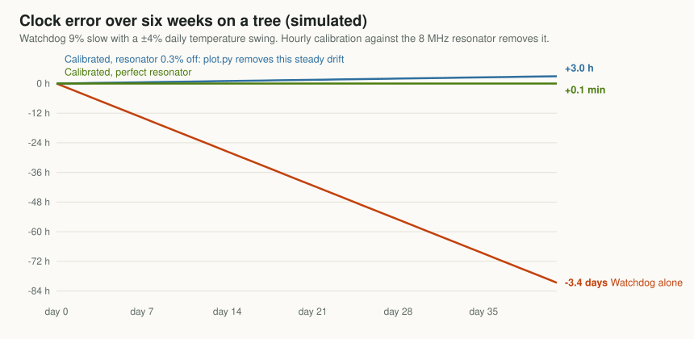
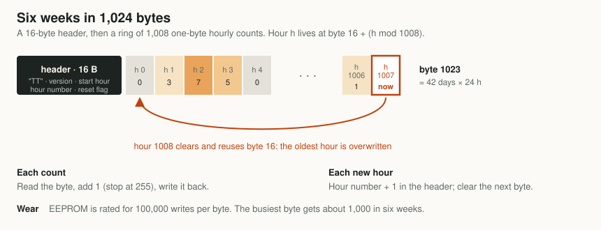
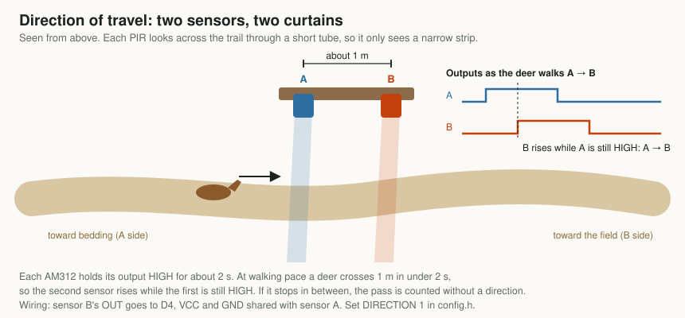
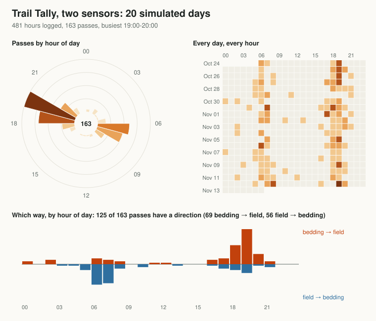

Project 02 · Low-power electronics
How a $3 counter learns when deer use a trail
A motion sensor, a sleeping chip and one byte per hour. Here's how to count trail traffic for six weeks on two AA batteries, and keep time to within minutes without a clock chip.

Why count instead of photograph
A trail camera is a remarkable thing for $80: a sensor, a camera, an infrared flash, a memory card and enough battery to run them for months. It answers the question what walked by. The price is a few hundred photos of grass and branches to scroll through, and a box valuable enough to steal.
Many stand decisions don't need the photo. They need the timing. Does this trail get used at first light, or only after dark? Do the deer come down off the ridge in the evening, or go up it? Did the traffic shift into daylight when the rut started, or out of it after the opener? A count of passes per hour answers all of those, and it needs a tiny fraction of the power, the money and your attention.
At about $3 each, you can hang five counters on five trails for the price of one camera, and compare them.
That comparison is the real point. One camera on one trail tells you about that trail. A handful of counters tells you which trail carries the daylight traffic, and that's where the stand goes.
What's in the pill bottle
Four parts and six wires. The brain is a Pro Mini, a thumbnail-sized Arduino board with an ATmega328P chip running at 8 MHz on 3.3 V. Clones cost about $2.1 The motion sensor is an AM312, a PIR module the size of a sugar cube that costs under a dollar. Add a button, an LED and a 2×AA holder.

The button does two jobs. Hold it for three seconds to start a new log; the moment you let go becomes 06:00 (or whatever start hour you set). Tap it in the field and the LED blinks out the busiest hour so far. A $2 USB-serial adapter, the same one used to load the firmware, reads the full log at home.
How a PIR sensor sees a deer
A passive infrared sensor doesn't send anything out. Everything warm gives off infrared light, and a PIR watches for changes in it. Inside is a pyroelectric crystal: a material that produces a tiny voltage when its temperature changes, not when it's simply warm.
The clever part is that the crystal is split into two halves wired against each other, and the plastic dome in front is a Fresnel lens that chops the view into many narrow zones. The zones are focused alternately onto one half and then the other.

That differential design is why PIRs are good at animals and people, which are warm and moving, and fairly good at ignoring weather, which changes everything at once. It also explains their main failure: sun on vegetation. A branch that sways between sunlight and shade looks exactly like a warm body moving between zones.
The AM312 was chosen for the power supply. It runs directly from 2.7 to 12 V and draws very little standing by.2 The common, larger HC-SR501 board is a better sensor on paper but wants about 5 V, which two AA cells can't give it.
Sleeping for months on 2×AA
A microcontroller running flat out at 8 MHz draws a few milliamps. That sounds small, but it would empty a pair of AA cells in a few weeks. The trick is that Trail Tally is almost never awake. The firmware is built around four habits.
Power-down sleep
In its deepest sleep, the ATmega328P stops its main clock entirely. With only the watchdog timer running, it draws about 4 to 5 microamps at 3 V.3
Waking on a pin change, not INT0
The chip has two dedicated external interrupt pins, and the obvious move is to put the sensor on INT0 and wake on its rising edge. But the datasheet has a catch: in power-down, INT0 can only wake the chip on a low level. Edge detection needs a clock that's no longer running. The PIR's output goes high.
So the firmware uses a pin-change interrupt instead. Pin-change interrupts are asynchronous and wake the chip on any change. The interrupt routine checks whether the sensor pin is now high, counts it if so, and ignores the falling edge two seconds later.
Brown-out detector off while asleep
The brown-out detector resets the chip if the supply sags, which protects the EEPROM from half-finished writes. It also costs around 20 µA, several times the sleeping chip itself. The ATmega328P can switch it off just for the duration of sleep, and the firmware does that every time.
No regulator, no power LED
The Pro Mini's regulator and its always-on power LED would use more current than everything else combined. The batteries feed VCC directly, which suits the chip: at 8 MHz it's rated down to 2.7 V, about where two alkaline cells are nearly spent. The LED comes off with a soldering iron.
| What | Current | How long |
|---|---|---|
| Chip asleep, watchdog running | ~4–5 µA | almost always |
| AM312 standing by | datasheet max 100 µA; usually far less | always |
| Watchdog wake, update the clock | ~3 mA | a fraction of a millisecond, every 8 s |
| Hourly calibration | ~1 mA | 1 s per hour |
Add it up and the average is somewhere between 15 and 105 µA, depending mostly on the sensor. Even at the worst case, 2,000 mAh of AA cells lasts over a year on paper. These are estimates, not measurements. In practice the cold and the batteries' own shelf life run out first, and the firmware's real limit is the 42 days of log space.
First-build check. Put a multimeter in series with the batteries and look at the sleep current. Expect tens of microamps. If you see a milliamp or more, the power LED is still on or the batteries are going through the regulator.
Keeping time without a clock chip
To sort counts into hours, the counter has to know what time it is. The usual answer is a real-time clock module like the DS3231, which keeps time to a minute a year. It also costs more than everything else in the box combined.
Trail Tally uses the watchdog timer instead. Its job is normally to reset a crashed program, but it runs off its own little 128 kHz oscillator, keeps going in power-down sleep, and can be set to wake the chip with an interrupt every 8 seconds. Count the wakes and you have a clock.
The catch is accuracy. That oscillator isn't trimmed to a precise frequency. It's often 5 to 15 percent off, and it moves with supply voltage and temperature.3 A 9 percent error is over two hours a day. After six weeks the counter would be filing dawn traffic under the middle of the night.
The board already has an accurate clock. It just can't run while the chip sleeps.
That accurate clock is the 8 MHz ceramic resonator that drives the CPU, typically good to a fraction of a percent. So once an hour the firmware borrows it to measure the watchdog:
- Switch the watchdog to its 1-second setting and restart it, so a full period begins now.
- Start Timer1 counting the CPU clock divided by 1024. At 8 MHz that's 7,812.5 counts per true second.
- Drop into idle sleep, which keeps Timer1 running, until the watchdog fires.
- Read Timer1. The count says how long one "watchdog second" really lasted.
- The 8-second setting divides the same oscillator by exactly eight times more, so every 8 s tick lasts eight times what was just measured. Use that for the next hour.
The clock itself is kept in milliseconds × 256, so the fractions of a millisecond from every tick add up properly over six weeks instead of being thrown away. A sanity check ignores any measurement more than 25 percent from nominal, so a glitch can't wreck the clock.

Calibration makes the watchdog as good as the resonator, and no better. A resonator can be up to about 0.3 percent off, which is about 3 hours over six weeks. But that error is steady, and a steady error is easy to remove after the fact. Note the time on your phone when you start the log and again when you read it. The chart tool then stretches the device's hours to fit the real ones. That's two-point synchronization, a standard trick for cheap data loggers.
One deer, one count
A deer that stops on the trail to browse can set off the sensor a dozen times in a minute. Counting every pulse would turn one browsing doe into a stampede. So after each count, the firmware ignores the sensor for 60 seconds.
The trade-off is deliberate: a group of five walking through together counts as one. That's usually what you want. The question Trail Tally answers is when the trail is used, not how many animals use it. If head counts matter, that's a job for the camera.
Two smaller guards keep bad data visible. A count can't wrap around from 255 back to zero; it stops at 255. And because of the lockout, a sensor stuck firing all the time can't count more than 59 an hour, which stands out on the chart instead of quietly filling the log.
Six weeks in 1,024 bytes
The ATmega328P has 1 KB of EEPROM: memory that keeps its contents with the power off, and can be rewritten byte by byte. That's tiny, but an hourly count fits in one byte, and 1,008 hours is six weeks.

- Every count is written immediately. If the batteries die on day 30, days 1 to 30 are still there.
- Wear is a non-issue. EEPROM cells are rated for about 100,000 writes. The busiest byte, the hour counter in the header, gets about 1,000 writes in six weeks.
- Resets are flagged. A battery swap or a brown-out keeps the log, but the chip can't know how long the power was off, so the clock restarts from the last saved hour. The header records that a reset happened, and the chart tool warns you that later hours may be shifted.
Reading the log
Plugging the USB-serial adapter into the board resets it, a side effect of how Arduino uploads work. Trail Tally turns that into a feature: the first thing it does after any reset is print the whole log as CSV, one line per hour, at 38,400 baud. Open any serial monitor, save the text, and run the chart tool:
The result is Figure 1: a 24-hour "deer clock" showing which hours carry the traffic, and a day-by-hour heat map that shows how the pattern changes over the weeks. With the start and read times, the hours are corrected for clock drift. Without them, days are simply numbered.
In the field, without a laptop, tap the button. The LED blinks the busiest hour so far: tens as long blinks, then ones as short. One long and seven short means 17:00. Five short means 05:00.
Which way did it go?
A count by hour says when a trail is used. It doesn't say which way. On a trail between bedding cover and a field, that's the more useful half: traffic heading out to feed at dusk and back to bed at dawn tells you which end of the trail to hunt at which time of day. A camera answers it only if you sit and read the direction off every photo.
Trail Tally gets it from a second sensor, for about a dollar. Mount two AM312s a metre apart along the trail, each looking across it through a short tube, a few centimetres of drinking straw or plastic pipe. The tube narrows each sensor's wide view down to a thin curtain across the trail.

The trick is that no timer is needed. Each AM312 holds its output high for about two seconds after it fires. A deer walking at about a metre a second crosses the gap in about a second, so when the second sensor fires, the first is still high. The firmware's interrupt reads both pins at that moment: whichever was already high fired first, and that's the direction. A deer that stops between the curtains for longer than two seconds is still counted, just without a direction.
Whichever sensor is already high fired first. That's the whole direction algorithm.
Direction needs more room in memory. Each hour gets a second byte holding two four-bit counts, one per direction, so the log covers 21 days instead of 42, and each direction tops out at 15 passes an hour. That's plenty with a 60-second lockout.

In the simulation, 125 of 163 passes got a direction, and every one of those was right. The rest are deer that stopped between the curtains, or passes where one sensor missed the animal. The two-sensor firmware runs on the simulated chip too, with passes in both directions, a single-sensor pass and a deer that stops halfway.
Which winds do they use the trail under?
Deer use the wind, and many hunters believe a given trail gets used more under some winds than others. With a SlopeShift logging at the same spot, the chart tool answers that from your own data. Give it the SlopeShift log and it tags each hour of the counter's log with the wind measured there that hour. Then it shows passes by wind direction, and passes per hour that each wind actually blew, so a wind that simply blew more often doesn't look busier than it is.
What already exists. Counters that report direction are common for people: Eco-Counter's PYRO, for instance, counts hikers in both directions, but it's tuned to human body heat.5 We didn't find a game-trail counter that logs direction, or one that ties passes to wind measured at the trail.
How it was tested
No board has been on a tree yet, so every claim on this page comes from simulation, in two layers. Both run automatically on every change to the code.
The counting code on a desktop
The file the chip runs, tally.cpp, has no hardware in it: the clock, the lockout and the log only see numbers. So the same file compiles on a PC, where a test feeds it 41.5 simulated days. The simulated watchdog runs 9 percent slow and drifts ±4 percent with the daily temperature, and gets calibrated hourly through the same math as the firmware. Deer arrive mostly around dawn and dusk and linger in front of the sensor for up to 40 seconds, setting it off repeatedly.
| Check | Result |
|---|---|
| Passes counted | 366 of 366, each exactly once |
| Hourly bins exactly right | 984 of 996; the rest are passes within a minute or two of an hour boundary |
| Clock after six weeks, calibrated | 2 minutes off |
| Same, watchdog alone | 3.4 days off |
| Ring wrap, reset survival, lockout edges, 255 cap | pass |
| Direction, 20 days, two sensors 1 m apart | 125 of 163 passes directed, all correctly |
The real firmware on a simulated chip
The second layer runs the actual compiled program in simavr, an open-source simulator of the ATmega328P.4 A small test harness plays the outside world. It holds the button to start a log, walks "deer" past the sensor pin over three simulated hours, including one that lingers and one that triggers inside the lockout, then taps the button. It checks the CSV that comes out of the serial pin and counts the LED blinks. Finally it resets the chip twice to make sure the log survives and gets flagged.
The simulator found real issues and a few of its own. Its watchdog runs eight times too fast, and the firmware's sanity check rightly rejected the impossible calibration until the harness corrected the simulated period. It clears the watchdog's interrupt-enable bit after every tick, so the firmware now sets it again each time, which is harmless on a real chip. And it revealed that the Arduino core leaves a PWM timer running, which a counter doesn't need, so the firmware switches it off.
Hanging it and using the data
Placement
- Height: about knee to waist height, roughly the height of a deer's body.
- Angle: aim along the trail at a slight angle, not straight across it. Animals walking along the trail then cross several zones, which gives a stronger signal.
- Distance: a few metres from where animals pass. Small PIR modules like the AM312 have a short range.
- Shade: keep the sensor's view out of direct sun on moving branches. A short tube over the lens narrows its view to the trail.
- Start time: start the log when you hang it, at a known time, and note it on your phone.
Reading the patterns
- Pick the sit, not just the spot. If a trail's traffic is all after dark, an evening sit on it is wasted. Hunt the end of the trail that gets used in daylight, or a different trail.
- Compare trails. Several counters show which route carries the daylight traffic.
- Watch it change. Run one from early fall into the rut and the heat map shows whether activity moves into daylight.
- Check pressure. A trail that goes quiet or turns nocturnal after the opener is telling you something too.
- Combine it. Feed in a SlopeShift log to see which winds the trail gets used under, and check Legal Light for whether the busy hour is even legal.
Check the rules. Some jurisdictions restrict leaving devices on public land, or using electronic scouting aids during the season. Know yours before you hang anything.
Limits and next steps
- It counts warm, moving things. Coyotes, cattle, hikers and your own visits all count. Visit at a known time and you'll find yourself in the data.
- Direction depends on the curtains. If the two sensors' views overlap, both fire together and the pass has no direction. The tubes matter, and the first real build should check them by walking through both ways.
- The power numbers are on paper. The first real build needs a meter in series to confirm them.
- A stricter count is possible with an infrared break-beam pair, about $1, which only fires when something crosses one line.
If you build one, the most useful thing you can send back is a week of data next to a trail camera on the same trail: counts against photos, hour by hour.
Notes
- SparkFun's Pro Mini 328, 3.3 V/8 MHz (DEV-11114) is the reference design. Clones of it are widely sold for about $2. ↩
- Adafruit sells a comparable mini PIR as product 4871, rated 3–12 V. Datasheets for AM312 modules list standby current under 0.1 mA. ↩
- ATmega328P datasheet, Microchip: sleep modes and wake-up sources, the watchdog timer and its oscillator, software brown-out disable, and typical power-down current. Nick Gammon's power-saving guide measures these numbers on real boards. ↩ ↩
- simavr, a lean AVR simulator. The harness is tests/fw_sim.c. ↩
- Eco-Counter makes the PYRO passive-infrared counters widely used on hiking trails, with direction detection. ↩